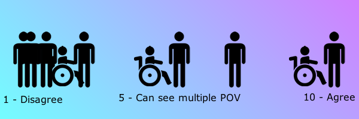

Make Your First Webpage | Revise a Résumé
45 minutes
Evaluate a résumé in need of revision and use common HTML tags to give it structure and organization, learning compose, code, evaluate, revise, remix, and share.
Web Literacy Skills
21st Century Skills
Learning Objectives
- Code and cmpose a résumé that shows qualifications and accomplishments.
- Evaluate and revise HTML markup by applying common tags to emphasize key information on a résumé.
- Optional: share a résumé online.
Audience
- 13+
- Beginner web user
Materials
- Projected instructor computer
- Internet-connected computers
- Thimble accounts
- Markers
- Paper
- Today’s project
-
1. Preparation
Try the offline and online activities before you teach the lesson. You can find the online activity here.
Tailor this activity for your audience. For example, you might run the activity more or less as is for young adult and adult learners composing résumés for education or employment. For younger students, you might create résumés for fictional or historical personas as part of a unit on a particular area of study.
-
2. Introduction
5 minutesWelcome your learners and tell them that today you’ll be working on using HTML to markup a résumé.
Explain:
To begin thinking of what might go in our own résumés, ywe're going to participate in a spectrogram - a discussion where you can “speak with your feet.”
Ask if any of your learners know what a résumé is and then invite a volunteer or two to explain the idea to the whole group. Help refine your definition so that it’s something like a list of accomplishments and experiences you share with a potential school or employer to get into a school or to get a job.
-
3. Offline Activity
15 minutesUse the scripted bits in pink and steps below to help learners follow your instructions and learn about the differences between block and inline elements. Pause to answer questions, rephrase instructions, and improvise new explanations as needed.
Today you’ll run a spectrogram. A spectrogram is a discussion in which people sit or stand along a number line according to their agreement with a statement read by the facilitator. For example, a participant who totally disagrees with the statement would sit or stand at one end of the line, while someone who totally agrees would sit or stand at the other end.

POV = points of viewHere’s a sample facilitation guide for spectrograms, and here’s more detail on how to facilitate such a discussion:
A spectrogram is a discussion activity. The facilitator reads a statement. Participants then group themselves according to whether or not they agree with the statement.
Here are steps you can follow as a facilitator when you run a spectrogram:
Welcome everyone and explain that you are about to start with a short introductory activity.
Next, ask everyone to join the activity and clear space in the room so they can move around without bumping into any obstacles.
Place post-its with the numbers one to ten written on them in a line on the floor or wall. Leave enough space for people to separate along the line.
Explain the activity to the participants: Today you’ll participate in a spectrogram - a conversation in which people can move around to show their opinions.
Our spectrogram will be about the skills we think someone needs to make a webpage. What would a résumé look like for a webpage builder?
Read each statement you choose for the activity. If your learners completely agree with a statement, they should move near the number 10. If they completely disagree, they should move near the number 1. Those who somewhat agree would move towards number 5. Tell the participants that they can change their minds based on what other participants say. Facilitators should demonstrate this so participants know it’s okay to move during the spectrogram.
Model moving along the numberline to answer a question and remind learners that they can change their position if they change their minds. Always invite people to participate however they feel the most comfortable. Someone might want to stay stationary or seated at a table and join in the conversation after each prompt without moving, Encourage people to contribute in ways that work for them to capture the widest variety of viewpoints on each statement.
Here are prompts you can use for this spectrogram, though you should feel to compose new ones, as well, for your learners.
Possible Spectrogram Prompts
- To build a webpage, you have to know how to code.
- To build a webpage, you need formal school experience, like college classes.
- To build a webpage, you need to have to know how to organize information.
- To build a webpage, you need educational experience in design.
- To build a webpage, you need educational experience with computers.
Be sure to allow for multiple, volunteered responses spoken out loud for each prompt. Remind learners that the big idea is to share a bunch of opinions, not to debate one another or put one another down. It’s also fine to speak with your feet or join the conversation without moving along the number line.
After you run the spectrogram, explain that it’s time for the online activity.
It’s time to move from considering the qualifications someone needs to build a webpage to the accomplishments and qualifications we have (or another persona has) for an educational opportunity or job we’d like to pursue. We’re going to revise a résumé using what we’ve learned about HTML to share what makes us (or another persona) a great candidate for a particular educational program or job.
-
4. Online Activity
25 minutesUse the scripted bits in pink and steps below to help learners follow your instructions and learn about the differences between block and inline elements. Pause to answer questions, rephrase instructions, and improvise new explanations as needed.
You can do this activity on paper if you’re in a lo-fi or no-fi setting without access to the internet or computers. Print copies of the résumé project from Thimble for participants to use as templates. Then they can write their own résumés using markup techniques from HTML to structure and organize the information on their prototypes.
Take your learners into Thimble.
First, let’s visit today’s project in Thimble. Here is the URL.
Post an easily readable shortened link to today’s activity like http://bit.ly/2bHKUxV.
This is the template for a basic résumé. Let’s each customize a copy to share our own qualifications as webpage builders. As we make our revisions today, it’s important not to share too much personal information, so don’t add any information outside the scope of the tutorial. If you’d like to use this résumé and you’re an adult, you can add the information you want later. Otherwise, check with parents or guardians before publishing any more information.
We’re going to use the résumé to share what we’ve learned about the web together.
Hit Remix to go into Thimble. Make sure your learners can all get there, as well.
You can also alter the assignment to be about a historical or fictional persona for your learners. For example, they might write a résumé for a great leader from history or a super-villain résumé based on the protagonist from a book, game, or movie.
Once you’re on the remix screen, sign in to Thimble. If you haven’t created an account yet, you need an email address to do so. Does anyone need help getting an account or signing in to Thimble?
Help students create accounts, sign in, or use a class account.
Is everyone ready to begin? Let’s take a look at how the résumé is put together and then use the tutorial to begin making our changes.
Follow along as we change our names, education, experiences, skills, and languages. You do not need to update or share any information that you don’t feel comfortable sharing, and I’ll remind you of this as we work through the tutorial.
Take your learners through the Thimble tutorial. You can also use it to guide them through a paper-based version of this activity.
-
5. Reflection
5 minutesEnd the activity with a brief reflective discussion of learners revised résumés. You can collect and assess learners’ responses in other ways, as well, but be mindful to do so in ways that are fair to all of your learners and allow them each individually the greatest amount of expression possible.
- What kinds of tags did you use today? How did they help structure the résumé?
- Is the web a good place to share a résumé? Why or why not?
- How else could people share the information on a résumé through the web? What other media could they use?
- What do you think are the key parts of a résumé?
- What do you think are the key parts of being a webpage builder?
Up Next --> Revise a Business Page
Questions? Comments? Suggestions for improvement? Email Chad Sansing, curriculum developer at the Mozilla Foundation.